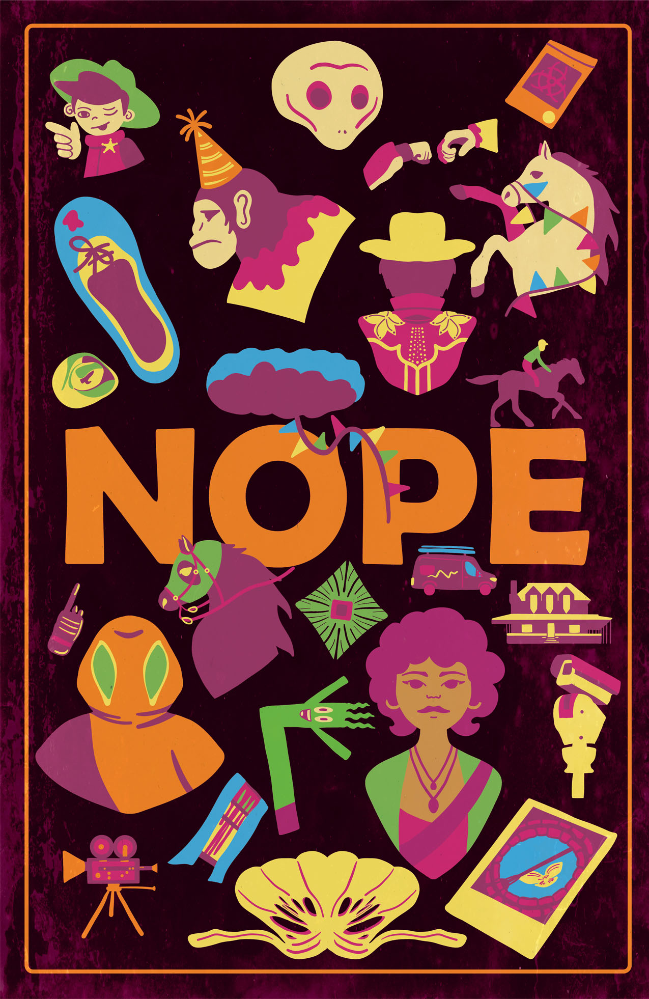
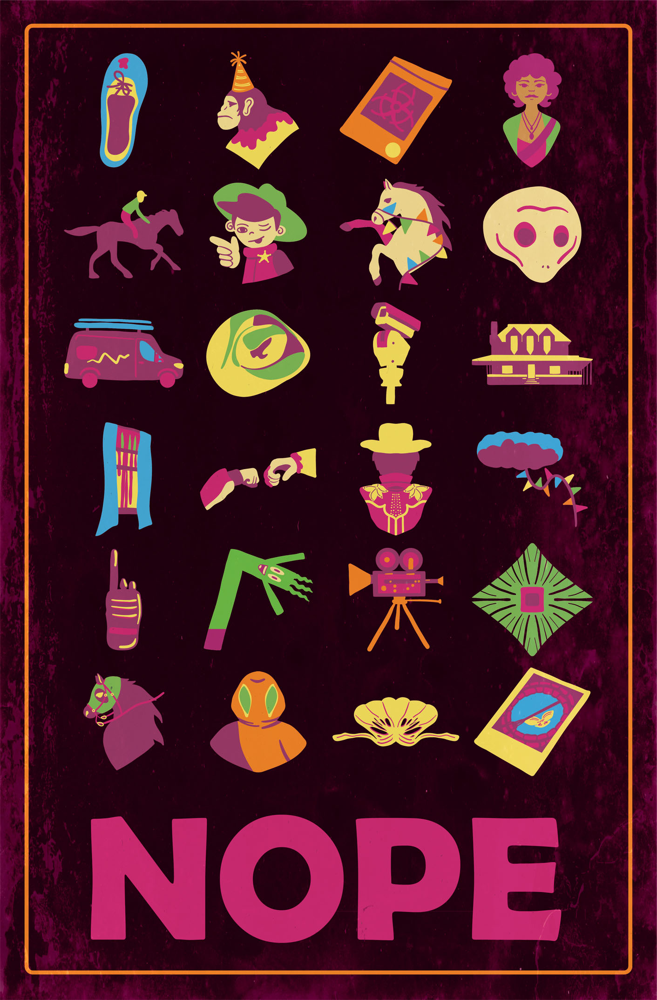

Maya Enfinger, Nope Poster, 2026, Digital Art
This poster was made for an assignment in my Graphic Design 1 class. We had to pick a movie of choice and create a cohesive set of icons to visually tell the narrative of the movie. I experimented alot during this process to find the style that I ended up with. I went for a color scheme that I thought best represented the movie's bold, popping colors while having a color palette that had a film like feel to it.